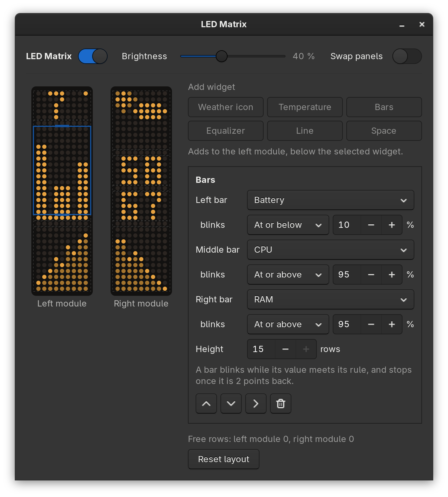

Framework Laptop 16 · Linux
Your LED Matrix modules, as a system dashboard
A small daemon for the two 9×34 LED Matrix input modules: bars for battery, CPU and RAM, the weather, the outside, GPU and CPU temperature, and an equalizer that follows your microphone or what the laptop plays, in stereo. Arrange the widgets on both modules in a light settings window; the tray keeps on/off, brightness and the swap. One module works too.
- Only the critical value blinks: battery ≤ 10 %, CPU and RAM ≥ 95 %, CPU at 120 °C — or whatever you set for each bar
- Weather from Open-Meteo, no account or API key
- Survives suspend, USB reconnects and network loss
- About 25 ms of CPU time a second (Ryzen 7 7840HS) and 20 MB of memory; next to nothing while the panels are off
Arrange it yourself
LED Matrix Dashboard in the application menu opens a small settings window that draws both modules LED for LED, as they look right now, with an outline around each widget.
- Click a widget to change it: where a temperature comes from, what each bar shows and when it blinks, what the equalizer listens to, how tall it is.
- Drag it onto empty rows to put it exactly there, between other widgets to move it, or onto the other module.
- Drag its top or bottom edge to resize bars, the equalizer or a space.
- Add a weather icon, a temperature, bars, an equalizer, a line or space; Delete removes one, Reset layout starts over.
Every change shows on the modules at once and is kept. The window is a process of its own that exits when you close it, so it takes no memory the rest of the time; the tray icon keeps on/off, brightness and the panel swap at hand.

Install
One line, as your normal user — no sudo:
wget -qO- https://github.com/Unrasend/fw-led-dashboard/releases/latest/download/install.sh | bash
It downloads release 1.7.0 into ~/.local/share/framework-led-dashboard,
detects your panels (one or two), writes ~/.config/framework-led-dashboard/config.toml,
starts the framework-led-dashboard systemd user service and adds the tray
icon to your session. Run the same line again to update.
Before you run it
Just Python 3.11+, which every current distribution has. For the tray, the settings
window and the equalizer it checks for GTK 3 and a few packages and offers to install
what is missing with pacman, apt, dnf or zypper — one question, one
sudo. Works on KDE Plasma, GNOME, XFCE, Cinnamon and more.
Read it first
Piping a script into bash deserves a look: install.sh touches only your home directory and never needs root.
By hand
Get framework-led-dashboard-1.7.0.tar.gz
or git clone the repository, then run ./install.sh inside.
Remove it again (keeps your config and tray settings):
wget -qO- https://github.com/Unrasend/fw-led-dashboard/releases/latest/download/install.sh | bash -s -- --uninstall
Every weather icon
All 28 Open-Meteo weather codes, by day and by night: 9×10 pixels, 20 frames at 2 frames a second, drawn here by the same code as on the panel. Pick one to put it on the right panel above.